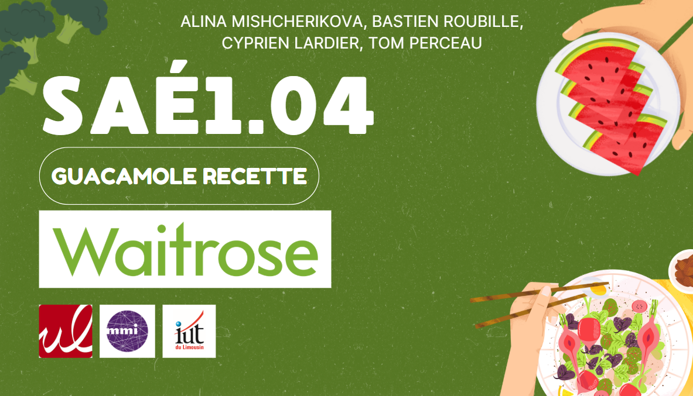

Création de Contenu Audio & Vidéo — "Les Fruits et Légumes en Stop Motion"
Contexte du Projet
Ce projet consistait à concevoir et réaliser une vidéo en stop motion, mettant en scène des fruits et légumes. L'objectif était de créer une narration visuelle originale, accompagnée d'un doublage en anglais pour une dimension internationale.
Démarche Créative
La production a débuté par une phase de pré-production approfondie, incluant l'écriture du scénario et la conception d'un storyboard détaillé pour chaque séquence. Ensuite, nous avons minutieusement préparé les éléments visuels (fruits et légumes) et mis en place le studio de tournage pour la prise de vues en stop motion, image par image.
En post-production, j'ai pris en charge le montage vidéo pour assembler les milliers de clichés en un mouvement fluide. J'ai également géré l'intégration et le mixage du doublage vocal en anglais, ainsi que l'ajout d'effets sonores et d'une ambiance musicale pour enrichir l'expérience. L'étalonnage final a permis d'harmoniser les couleurs et de donner le ton visuel souhaité.
Livrables Clés
LIVRABLE 1 — La Vidéo Stop Motion Finale
Le résultat final est une vidéo en stop motion de 2 minutes, entièrement montée, sonorisée et doublée en anglais, présentant l'histoire captivante de nos fruits et légumes.
LIVRABLE 2 — Documents de Pré-Production
Un ensemble de documents préparatoires a été élaboré pour guider la production, incluant le résumé du projet, la note d'intention, le moodboard visuel, ainsi qu'un storyboard détaillé.
Consulter les documents de pré-production (Canva)